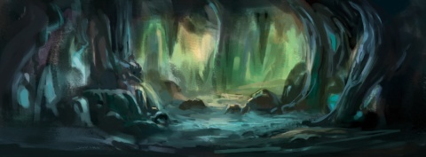

|  | Локация: | Расщелина Орунол |
|---|---|---|
| Регион: | Соколиния, Горы Короля-сокола | |
| Карта: | | |
| Местность: | | |
| Открытие: | | |
| Бонусы: | 31 71 |
| В эту расщелину, весьма хорошо скрытую от посторонних глаз, с трудом может пролезть человек. А запутанная сеть туннелей делает передвижение внутри невероятно сложной задачей | ||
Добыча
| Действие | Навык(и) | Расход на цикл | Результат | |
|---|---|---|---|---|
| Время | Усилие | |||
| Собирать нирулсок | |
|
|
Шаблон:Нирулсок × 1 |